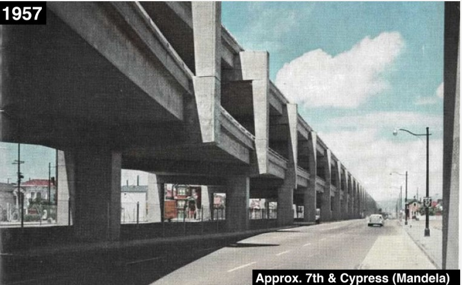
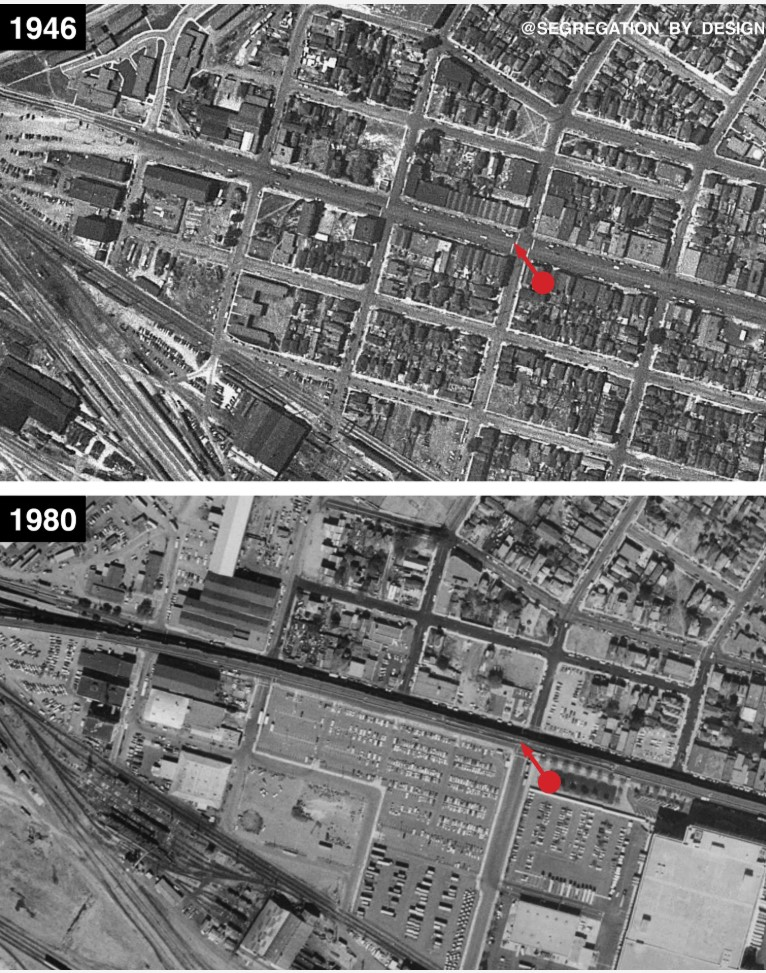

Racism is a huge problem in the United States, and it is no different when it comes to transportation. The United States has a long and troubling history of racism, and this has had a significant impact on the transportation system.
Various black and brown communities around the United States have been paved through to make space for cars, and un uniaginable amount of culture has been lost
In addition, many public transportation systems in the United States have been designed in a way that disproportionately benefits white communities. This has led to a lack of access to transportation for many black and brown communities, which can make it difficult for them to access jobs, education, and other opportunities.
  Home SurveyImages courtesy of @Segregation By Design